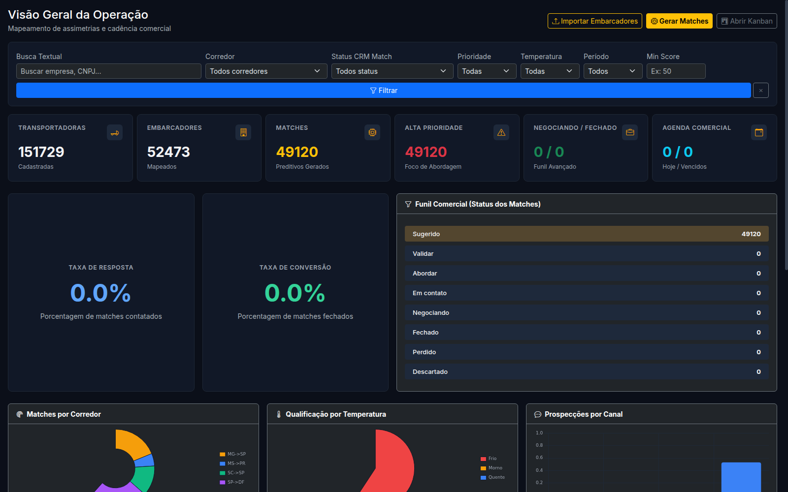
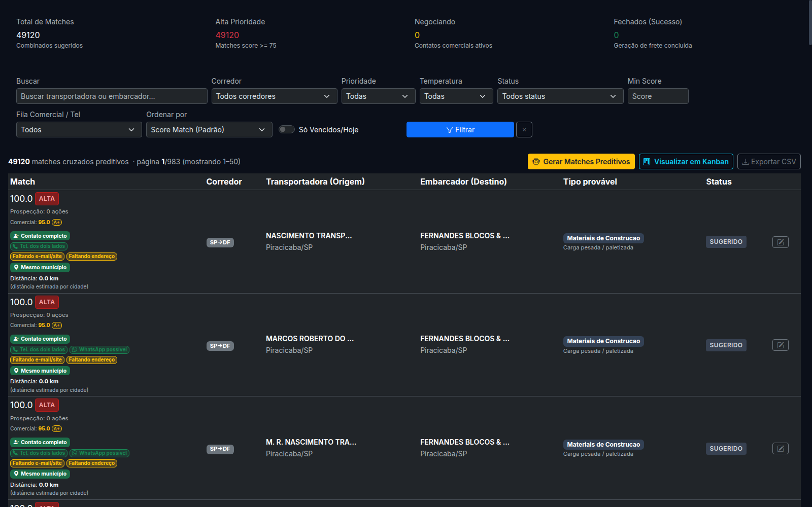
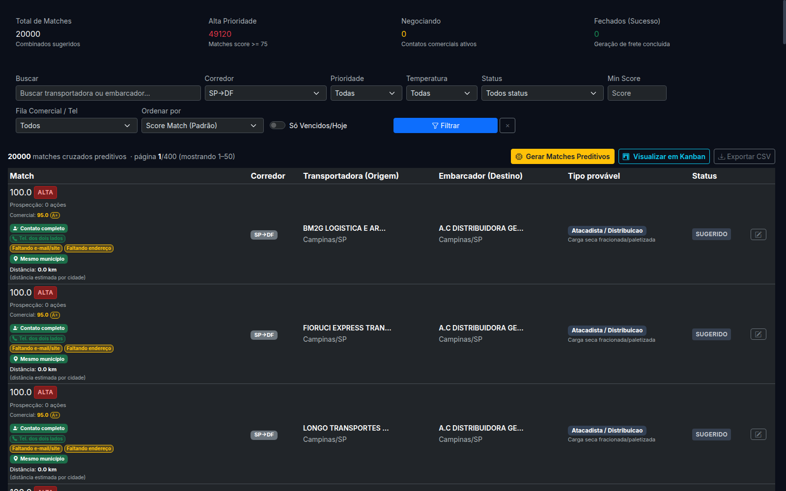
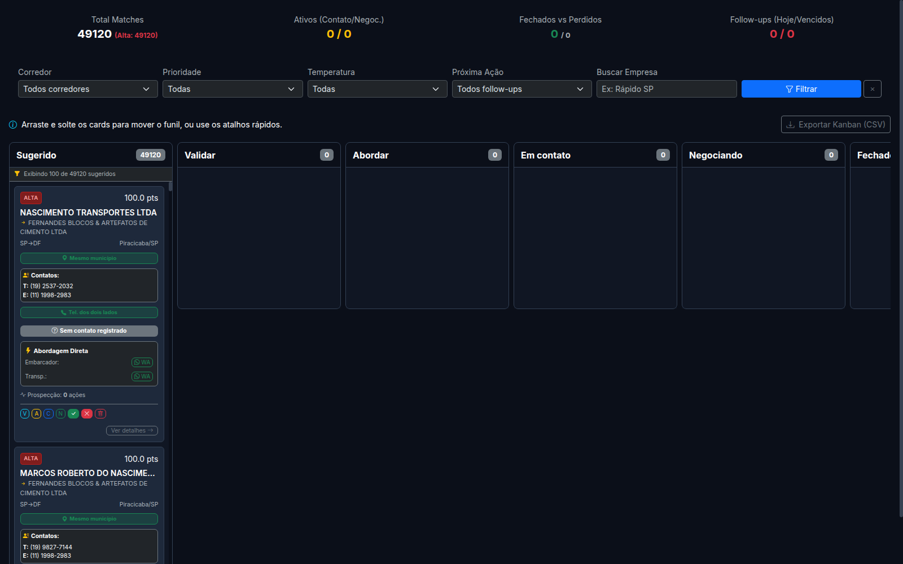
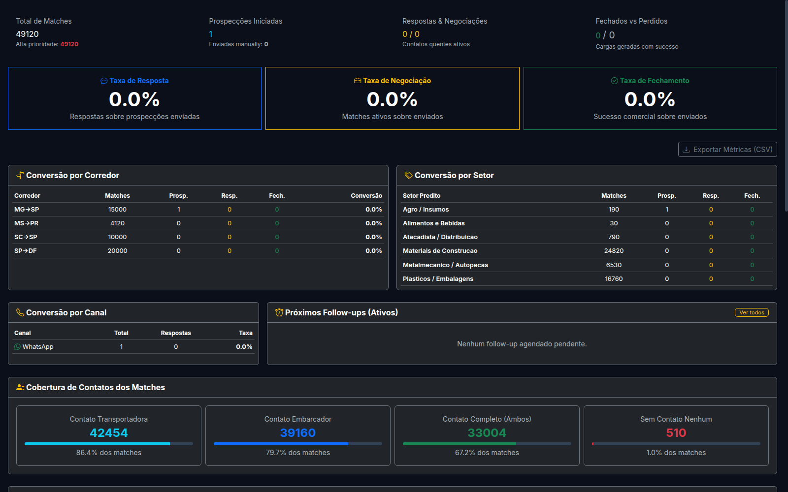

Este manual foi desenvolvido para guiar operadores comerciais e operacionais no uso do sistema WiNS Hub Log de forma prática, passo a passo e sem necessidade de conhecimento técnico em programação.
O WiNS Hub Log é uma ferramenta de inteligência de dados logística projetada para combater a ineficiência de caminhões retornando vazios (capacidade ociosa) nas estradas brasileiras.
Uma combinação lógica entre uma transportadora e um embarcador provável que têm afinidade de rotas, setores e carrocerias.
O indicador de compatibilidade logística original (calculado de 0 a 100). É o ranking estatístico principal gerado pelas heurísticas preditivas da ferramenta.
Pontuação (de 0 a 100) que prioriza a abordagem de prospecção. Esse score pondera o score_match original, a disponibilidade de contatos telefônicos nas duas pontas, flags de WhatsApp provável, distância geográfica e completude de dados.
Índice percentual que reflete a qualidade e a quantidade de dados cadastrais disponíveis para uma empresa no sistema (como CNPJ, endereço completo, dados societários/QSA e telefone).
A distância estimada em quilômetros (distancia_km) entre o endereço ou centroide da cidade da transportadora e a localização do embarcador.
Nota Geográfica: A maioria dos registros possui precisão estimada em nível de cidade (centroide municipal). Trata-se de um indicador estatístico auxiliar de proximidade, não devendo ser tratado como endereço físico absoluto.
Um match que possui pelo menos uma informação de contato válida (telefone, e-mail, site ou sócios) em qualquer uma das duas pontas para permitir o início da abordagem.
Indica que tanto a transportadora quanto o embarcador possuem pelo menos um número de telefone cadastrado no sistema.
Classificação atribuída automaticamente a números de telefone celular estruturados que são elegíveis para o envio de mensagens no aplicativo WhatsApp. Não significa WhatsApp ativo ou confirmado.
1. Abra o seu navegador web (Chrome, Firefox, Safari ou Edge).
2. Acesse a URL: http://127.0.0.1:5055
3. Caso esteja acessando a ferramenta de forma remota através de um túnel SSH (redirecionamento de porta), mantenha o seu terminal de comando aberto. Caso o terminal seja fechado, a conexão será recusada.
# Verificar se a aplicação está ativa e operando
sudo systemctl status wins-hub-log --no-pager
# Reiniciar o serviço (caso ocorra lentidão ou travamento)
sudo systemctl restart wins-hub-logO painel inicial apresenta um diagnóstico rápido da base comercial e estatísticas de contatos.

Passo a Passo — Filtrar por Corredor:
1. Localize a barra de Filtros Globais no topo da página.
2. Na opção Corredor, selecione o corredor de interesse (ex: SP->DF).
3. Clique em Filtrar.
4. Você será automaticamente redirecionado para a tela /matches com os resultados filtrados.
Esta tela concentra a listagem detalhada de todas as combinações sugeridas pela ferramenta.

Passo a Passo — Acompanhamento Comercial:
1. Na linha do match escolhido, clique no botão de lápis (Editar) no canto direito.
2. O painel lateral abrirá exibindo o histórico de prospecções.
3. No painel, você verá telefones normalizados e nomes dos sócios/administradores (se disponíveis).
4. Realize o contato manual via ligação ou WhatsApp.
5. Após o contato, altere o Status Comercial do Match no formulário do painel lateral.
6. Registre observações sobre a negociação no campo de texto e clique em Salvar Negociação.
A barra de filtros de /matches permite segmentar a base em tempo real para encontrar as oportunidades operacionais ideais.

DF">A tela de Kanban fornece uma visão dinâmica e visual das negociações.

Concentra os relatórios analíticos de BI da operação de fretes.

Esta funcionalidade prioriza os melhores matches da base de dados sem interagir com as empresas. Os arquivos estão em exports/comercial/:
fila_piloto_A_plus.csvfila_telefone_dois_lados.csvfila_completar_dados_antes.csvO corredor SP->DF foi qualificado como o mais maduro. Os arquivos estão em exports/pilotos/:
piloto_100_sp_df.csvcontrole_manual_piloto_100_sp_df.csvROTEIRO_ABORDAGEM_PILOTO_100_SP_DF.mdMensagem Inicial para Transportadora (WhatsApp/Telefone):
"Olá, tudo bem? Meu nome é [Seu Nome], da WiNS Hub Log. Estamos validando oportunidades de rotas e frete de retorno no corredor SP→DF. Vocês costumam atender esse trecho ou têm interesse em posicionar caminhões nessa rota?"
NUNCA faça o seguinte:
1. Não faça disparos em massa.
2. Não promete carga fechada e garantida.
3. Não ofereça estimativas de tarifas sem confirmar com o embarcador.
4. Não compartilhe dados societários ou CNPJ entre as pontas.
1. Iniciar o dia analisando as Métricas.
2. Identificar matches A+ na tela de Matches.
3. Fazer contato manual com a transportadora.
4. Se houver interesse, iniciar validação com o embarcador correspondente.
5. Atualizar o Kanban e registrar as notas comerciais.
python scripts/auditar_telefones_matches.py
python scripts/auditar_completude_dados.py
python scripts/backup_db.py| Problema | Causa Provável | Como Resolver |
|---|---|---|
| Página não abre | Gunicorn inativo no servidor | Execute sudo systemctl restart wins-hub-log |
| Conexão Recusada | Túnel SSH fechado | Reabra o terminal SSH com a porta redirecionada |
| Filtro lento | Banco travado (SQLite Lock) | Evite rodar scripts durante a operação de prospecção |